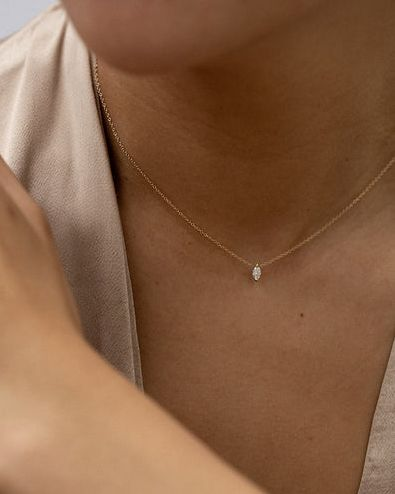

Home
Bracelets
Necklaces
Rings

This website made from HTML contains all the sources used in the Weebly site "Biyaya's Jewelry".
The products used are part of a website that is a requirement for the SHS subject "Empowerment Technologies".
No products are owned by the website's creator nor are claimed to be available.
Mary Grace D. Dometita
Grade 12-A
Empowerment Technologies